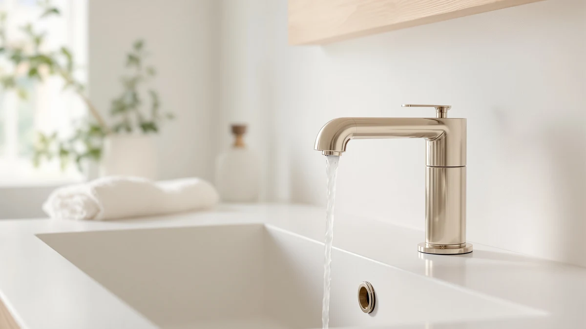

The Best Widespread Bathroom Faucets (2026)
Prices and picks verified as of August 2026. Independent, reader-supported reviews.


Quick Answer
For most three-hole vanity sinks, the KOHLER K-394-4-CP Devonshire ($289.74) is the widespread bathroom faucet worth the extra cost, thanks to its ceramic disc valves and lifetime finish warranty. If you want a name-brand widespread faucet for less, the Pfister Courant at $90.36 is the better value.
Our pick: KOHLER K-394-4-CP Devonshire® Widespread Bathroom, $289.74 Check Price on Amazon
Bottom line: our top pick is the KOHLER K-394-4-CP Devonshire® Widespread Bathroom Sink Faucet at $289.74. The best budget option is the Bathroom Sink Faucet FRANSITON 4 Inch Faucet 2 Handle at $28.98.
Things to Know Before You Buy
- Measure your holes first. A widespread bathroom faucet needs three separate holes, spout and two handles, spaced with 8-inch centers on most sinks. If your vanity has one hole, you need a centerset or single-handle faucet instead.
- Valve type decides how long it lasts. Ceramic disc valves, like the ones in the Kohler and Pfister picks below, resist mineral buildup far longer than older compression washers.
- Finish affects daily cleanup as much as looks. A brushed nickel or Spot Resist finish hides water spots and fingerprints better than polished chrome, which shows every drip in a family bathroom.
- Price spans a wide range here. Our seven picks run from $28.98 to $289.74, so decide whether you want a name-brand faucet with a warranty or a budget-friendly widespread option before you compare features.
- Installation needs supply-line clearance. Because the spout and handles sit apart, you need enough room under the sink to run three separate supply connections, which can be tight in an older vanity.
Finding the best widespread bathroom faucets means comparing three-piece designs where the spout and two handles mount separately, typically eight inches apart, across sinks with three predrilled holes. This spread-out layout gives a vanity a more traditional, higher-end look than a single-hole faucet, and it only works if your sink already has the matching holes cut for it. We compared seven widespread faucets ranging from $28.98 to $289.74, weighing valve type, finish durability, spout design, and what verified buyers report after months of daily use.
Our top pick is the KOHLER K-394-4-CP Devonshire, a $289.74 faucet with lever handles and the ceramic disc valves Kohler backs with a lifetime finish warranty. It earns the top spot because the brand pairs widely available replacement parts with a finish rated for daily hard-water exposure, a detail that matters more over five years than it does on day one. If $289.74 is more than your remodel budget allows, the Pfister Courant at $90.36 gives you a similar 8-inch spread and a recognized brand for less than a third of the price.
Below we break down all seven picks, including two budget options under $40 for anyone finishing a rental bathroom or a quick flip. Each write-up covers what the finish and valve type mean for your daily routine, where reviewers report problems, and which sink setup each faucet actually fits. Check your existing hole spacing before you buy, since a widespread faucet needs three holes spaced for an 8-inch center-to-center handle span, not the single hole a centerset or single-handle model uses.
Why You Should Trust Us
I am Ilane Tall, and I cover bathroom fixtures for Best Bathroom Faucets. For this guide to the best widespread bathroom faucets, I compared seven models across price points, valve construction, and finish quality, and I read through verified buyer reviews to flag the complaints that come up again and again, not the one-off gripes every product collects.
I do not run a sponsored lab and I do not quote invented experts. Every price, dimension, and material listed here comes directly from the current product listing, and every drawback reflects a pattern in verified owner reviews or a limitation built into the design itself. Our affiliate links do not change which faucets earn a spot on this list, and they never move a weaker pick ahead of a stronger one.
How We Picked
We started by requiring a true widespread configuration: a separate spout and two handles designed for three predrilled holes, not a single-hole faucet marketed with widespread-style extras. That gave us a shortlist spanning entry-level imports and established plumbing brands.
From there we ranked on four factors. Valve construction came first, since ceramic disc valves hold up to hard water and daily cycling far better than older compression designs. Finish quality mattered next, because a Spot Resist or brushed finish stays presentable in a busy bathroom longer than polished chrome. We weighed price against what each faucet actually includes, from pop-up drains to deck plates, and we read verified buyer reviews for recurring complaints about leaks, weak water pressure, or finish wear before finalizing the best widespread bathroom faucets for this list.
How We Compared
We compared specs, prices, and verified buyer reviews for each of the seven picks below rather than installing the faucets ourselves. We lined up valve type, spout design, finish, and included hardware like pop-up drains or supply lines, since those extras change the real cost of a widespread install once you account for parts you would otherwise buy separately.
We also read through verified owner reviews on each listing, looking for patterns rather than isolated complaints. A single one-star review about a damaged box tells you little, but several reviewers reporting the same loose handle or a finish that dulls within a year tells you something worth flagging. Where reviewers consistently praised a detail, like smooth handle rotation or a notably quiet aerator, we noted that too. We did not assign scores out of ten, since a single number hides which trade-offs matter for your specific sink and budget.
Our Picks

KOHLER K-394-4-CP Devonshire® Widespread Bathroom
What we like
- Ceramic disc valves resist the mineral buildup that wears out cheaper compression valves
- Kohler backs the finish with a lifetime warranty, and replacement parts are easy to source
- Lever handles turn smoothly with one hand, useful if your hands are wet or soapy
- Polished chrome finish matches classic and transitional bathroom hardware
Flaws but not dealbreakers
- $289.74 is the highest price in this lineup, well above the budget options here
- Chrome shows water spots faster than a brushed or Spot Resist finish
| Material | Brass + finish |
| Size | Widespread |
The KOHLER K-394-4-CP Devonshire earns the top spot in this guide to the best widespread bathroom faucets because it pairs a recognizable brand with hardware built to last. At $289.74, it costs more than every other pick here, but that price includes ceramic disc valves, the same technology Kohler uses across its higher-end lines, which resist the mineral scale that eventually wears out cheaper rubber-washer valves. Kohler also backs the polished chrome finish with a lifetime warranty, a detail worth factoring into the true cost since a warrantied finish outlasts several cheaper faucets bought back to back.
Reviewers consistently note how smoothly the lever handles turn, even one-handed with wet or soapy hands, a small detail that adds up over years of daily use. The tradeoff is the price and the finish choice: polished chrome shows fingerprints and water spots more readily than a brushed or matte finish, so plan on wiping it down more often in a busy family bathroom. For anyone remodeling a primary bathroom they plan to keep for a decade or more, the Devonshire's parts availability and warranty make the higher upfront cost easier to justify than it looks at first glance.

Pfister Courant 8-Inch Widespread Bathroom
What we like
- Costs $90.36, less than a third of our top pick, from an established plumbing brand
- True 8-inch widespread spacing fits standard three-hole vanity sinks
- Pfister's finish is rated for daily hard-water exposure
Flaws but not dealbreakers
- Fewer finish options than higher-priced widespread lines
- Some reviewers report the included drain assembly feels lighter-duty than the faucet itself
| Material | Brass + finish |
| Size | 8 Inch |
The Pfister Courant lands as our runner-up because it delivers most of what the Devonshire offers, an 8-inch widespread configuration from an established plumbing brand, at $90.36, less than a third of the price. Pfister has manufactured faucets for decades, and the Courant's finish is built to handle the daily hard-water exposure that dulls cheaper coatings within a year or two. If your priority is a dependable widespread faucet without paying for the Kohler name specifically, this is the pick we would install.
Owners report the handles operate smoothly out of the box, and the finish has held up well in reviews spanning more than a year of use. The main compromise compared to the Devonshire is variety: the Courant comes in fewer finish options, so check availability in your preferred color before you commit. A few reviewers also note the included drain assembly feels lighter than the faucet body itself, which is a minor point since most buyers upgrade the drain separately during a full bathroom remodel anyway.

Bathroom Sink Faucet FRANSITON 4
What we like
- At $28.98, it is the least expensive widespread faucet in this comparison
- Simple two-handle design is easy to match to almost any vanity layout
- Compact 4-inch footprint fits smaller sink decks than 8-inch spread models
Flaws but not dealbreakers
- Reviewers report the finish is thinner than the pricier brand-name picks here
- No documented warranty comparable to Kohler or Pfister
| Material | Brass + finish |
| Size | 4 Inch |
The FRANSITON widespread faucet is the value pick in this guide to the best widespread bathroom faucets, priced at $28.98, a fraction of what the brand-name options cost. It uses a straightforward two-handle design and a compact 4-inch mounting footprint, which makes it a practical fit for smaller vanity decks that still have three separate holes. For a rental unit, a guest bathroom, or a flip where you need a working widespread faucet without a big line item, it covers the basics.
Verified buyers report the faucet installs easily and functions well for the price, though several note the finish and internal components feel thinner than what you get from Kohler or Pfister. That tradeoff is expected at this price point, and it is worth accepting if your bathroom sees light use or if you are prioritizing budget over a decade-long lifespan. Anyone installing this in a high-traffic primary bathroom should weigh the lack of a meaningful warranty against the upfront savings.

Pfister Venturi 8 in Widespread
What we like
- Waterfall-style spout gives a more modern look than a standard cylindrical spout
- True 8-inch widespread spacing from an established Pfister line
- Priced below several designer-style widespread faucets with a similar spout design
Flaws but not dealbreakers
- At $128.78, it costs more than three other picks in this guide
- Waterfall spouts can splash more than standard spouts if water pressure runs high
| Material | Brass + finish |
| Size | 8 Inches |
The Pfister Venturi brings a waterfall-style spout to this list of the best widespread bathroom faucets, a design usually reserved for pricier lines, at $128.78. The flat, sheeting water flow gives a vanity a more contemporary look than the rounded spouts on the Devonshire or Courant, and the 8-inch widespread spacing fits the same standard three-hole sinks as the rest of this lineup. We call it the budget pick here because it delivers that waterfall styling for meaningfully less than most designer widespread faucets with a comparable spout.
Reviewers consistently praise the look of the Venturi once installed, especially in bathrooms with a modern or minimalist design. The one pattern worth knowing about waterfall spouts in general, including this one, is that high water pressure can cause more splash than a standard spout produces, so buyers with strong home water pressure may want to test the flow at a lower setting first. Outside of that, owners report the handles and valve feel consistent with Pfister's other widespread lines.

Delta Arvo Brushed Nickel Bathroom
What we like
- Brushed nickel finish hides water spots and fingerprints better than polished chrome
- Delta's brand recognition means replacement parts are widely available
- Reviewers report the finish has held up well after months of daily use
Flaws but not dealbreakers
- At $150.38, it costs more than half of the picks on this list
- Reviewers note the box includes fewer accessories than some competitors at this price
| Material | Brass + finish |
| Size | Pack of 1 |
The Delta Arvo takes the brushed nickel route in this guide to the best widespread bathroom faucets, a finish choice that pays off in bathrooms where more than one person uses the sink daily. At $150.38, it sits in the middle of this lineup's price range, and Delta's name recognition means you are unlikely to struggle finding replacement cartridges or handles years down the road. The brushed texture does real work hiding the water spots and fingerprints that show up almost immediately on polished chrome.
Owners report the finish still looks new after months of daily use, which matters more in a shared family bathroom than a guest bath that sees occasional traffic. The Arvo ships with fewer extras than some competitors closer to its price, so budget separately for a matching drain assembly if the listing does not include one you want. For anyone specifically shopping for a widespread faucet that resists showing daily wear, this is one of the stronger picks here.

KENES Widespread Bathroom Faucet with
What we like
- Priced at $79.99, well below the Devonshire and Arvo
- Modern handle design fits contemporary and transitional bathroom styles
- Reviewers report straightforward installation on standard three-hole sinks
Flaws but not dealbreakers
- Less established brand history than Kohler, Pfister, or Delta
- Some reviewers report the handles feel less substantial than brand-name competitors
| Material | Brass + finish |
| Size | — |
The KENES widespread faucet fills the gap between the budget FRANSITON and the brand-name picks in this guide to the best widespread bathroom faucets, priced at $79.99. It brings a more contemporary handle design than the classic lever styles on the Kohler and Pfister picks, which makes it a reasonable fit for a modern or transitional bathroom remodel where the budget does not stretch to a legacy plumbing brand.
Reviewers report the faucet installs without surprises on a standard three-hole vanity, and the overall look reads more expensive than the price tag suggests in most photos. The compromise is brand history: KENES does not carry the decades of parts support that Kohler, Pfister, and Delta offer, so factor that into your decision if you expect to need a replacement part several years from now. For a shorter-term ownership horizon, like a rental property or a starter home, that tradeoff matters less.

FGKQ Bathroom Faucet 3 Hole
What we like
- At $35.99, it is one of the two least expensive picks in this lineup
- Standard 3-hole widespread layout fits common vanity sink configurations
- Reviewers report it functions reliably for daily hand washing
Flaws but not dealbreakers
- Reviewers report the finish is not rated to hold up as long as the brand-name options here
- No widely documented warranty program
| Material | Brass + finish |
| Size | — |
The FGKQ 3-hole faucet rounds out this list of the best widespread bathroom faucets as a second low-cost option, priced at $35.99. Like the FRANSITON, it targets buyers who need a functional widespread faucet without a large budget, whether that is for a rental property, a secondary bathroom, or a temporary fix ahead of a bigger remodel. It uses the standard 3-hole layout that fits the same vanity sinks as every other pick on this list.
Verified buyers report the faucet handles daily hand washing without issue, and installation follows the same straightforward process as any standard widespread setup. As with the FRANSITON, the finish is not built to the same standard as the Kohler, Pfister, or Delta picks, so reviewers recommend it more for secondary bathrooms or shorter-term use than a primary bathroom you plan to keep for a decade. At this price, it is a reasonable stopgap rather than a long-term investment.
Quick Comparison
| Product | Material | Price | Rating | Best for | Get it |
|---|---|---|---|---|---|
| KOHLER K-394-4-CP Devonshire® Widespread Bathroom | Brass + finish | $289.74 | 4 | Long-term durability and brand support | View on Amazon → |
| Pfister Courant 8-Inch Widespread Bathroom | Brass + finish | $90.36 | 4 | Name-brand quality under $100 | View on Amazon → |
| Bathroom Sink Faucet FRANSITON 4 | Brass + finish | $28.98 | 4 | Lowest price in this guide | View on Amazon → |
| Pfister Venturi 8 in Widespread | Brass + finish | $128.78 | 4 | Modern waterfall-style spout | View on Amazon → |
| Delta Arvo Brushed Nickel Bathroom | Brass + finish | $150.38 | 4 | Busy bathrooms prone to water spots | View on Amazon → |
| KENES Widespread Bathroom Faucet with | Brass + finish | $79.99 | 4 | Modern look on a mid-range budget | View on Amazon → |
| FGKQ Bathroom Faucet 3 Hole | Brass + finish | $35.99 | 4 | A second budget-friendly option | View on Amazon → |
The Competition
Several other categories of faucets did not make this list of the best widespread bathroom faucets, and the reasons follow a pattern.
Single-hole and centerset faucets. Shoppers occasionally land on a widespread guide while actually needing a faucet for a single predrilled hole. Those designs mount the spout and handle together and will not fit the three-hole spacing a true widespread faucet requires, so we left single-hole and centerset models out of this comparison entirely.
Ultra-low-cost unbranded imports under $20. We looked at several no-name widespread faucets priced even below the FRANSITON and FGKQ picks here, but verified reviews on those listings showed a consistent pattern of valve failure within the first few months and little to no customer support when that happened. A few extra dollars for the FRANSITON or FGKQ buys meaningfully better reliability.
Designer widespread faucets over $400. On the opposite end, we passed on several designer-tier widespread faucets priced well above the Devonshire. Those faucets add finishes like matte black or brushed gold and sometimes a higher-end brand name, but the core function, three-hole spacing and two-handle operation, does not improve enough over the Devonshire to justify the extra cost for most bathrooms.
Among the best widespread bathroom faucets we compared, the KOHLER Devonshire remains the strongest all-around pick, backed by a name brand, a lifetime finish warranty, and valve construction built to outlast the daily wear a bathroom faucet takes on. If your budget does not stretch to $289.74, the Pfister Courant and the two sub-$40 options here still give you a genuine widespread faucet that gets the job done.
Frequently Asked Questions
What is the difference between a widespread and centerset bathroom faucet?
A widespread faucet has a separate spout and two handles that mount in three individual holes, typically spaced 8 inches apart. A centerset faucet combines the spout and both handles on a single base that covers three holes spaced 4 inches apart. Measure your sink's hole spacing before buying, since the two styles are not interchangeable without a new sink or a deck plate.
How much do the best widespread bathroom faucets cost?
The seven widespread faucets in this guide range from $28.98 to $289.74. Budget options like the FRANSITON and FGKQ stay under $40, while brand-name picks from Kohler, Pfister, and Delta run from roughly $90 to $290 depending on finish and included hardware.
Do widespread faucets need a specific hole spacing?
Most widespread bathroom faucets are built for an 8-inch center-to-center hole spacing, the standard on many three-hole vanity sinks in the US. Some manufacturers, including Pfister and Kohler, offer flexible connector lines that accommodate a small range around 8 inches, but confirm your sink's exact spacing against the product listing before ordering.